and Frequencies!
SYDE 671 · Assignment 2 · James Xie
PART 2.2:
HYBRID
IMAGES
A hybrid combines two pictures. Fine detail is easier to see up close; broad shapes are easier to see from farther away or in a smaller view.
Includes mandatory Bells & Whistles: color placement
01 / Three hybrid images
Look at the large pictures, then step back or compare the small versions. The source pictures are shown before alignment; the hybrids use the shared aligned crop. The effect depends on the screen, viewing distance and eyesight. I judge these examples by looking at them.
Derek + Nutmeg

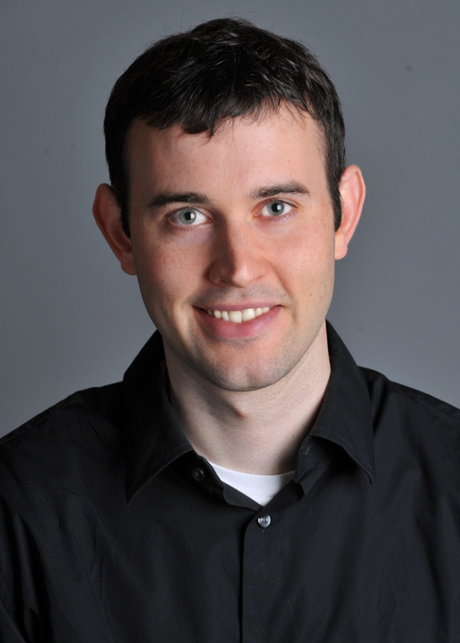


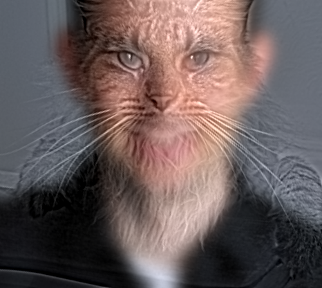
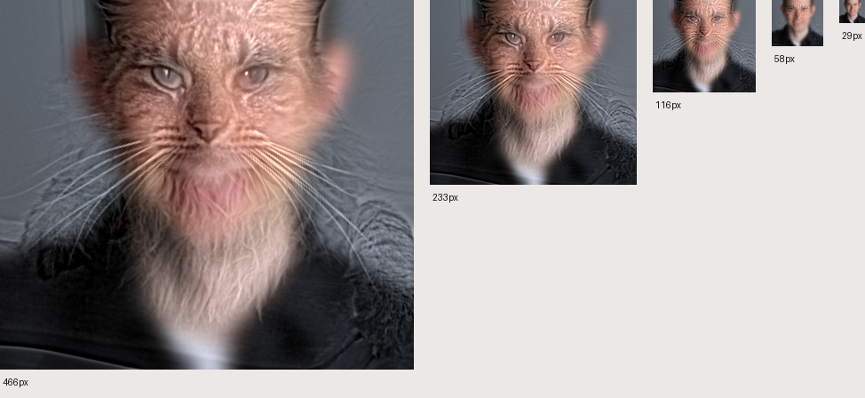
At a large size, I see more cat fur and whiskers. At a small size, I see more of Derek and his skin color. The eyes line up, but the human mouth and cat nose do not, so the large result still looks mixed.
Aligned crop: 466 × 416 · σ low = 10 px · σ high = 4 px · high-band gain = 1.2. Before display clipping, 1.01% of RGB channel samples lie outside [0, 1].
Obama + Trump


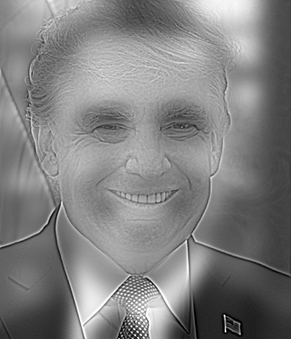
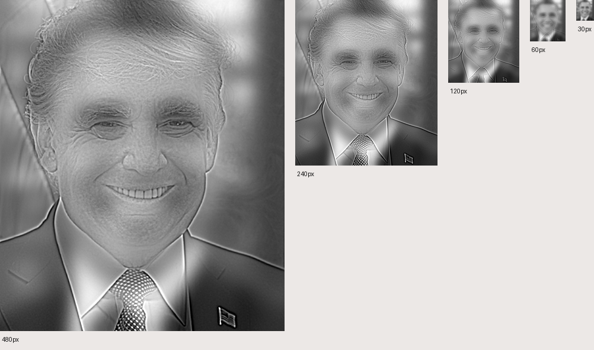
The large view shows more Trump detail around the eyes, forehead and mouth. The small view shows more of Obama and his smile. The switch is less clear than cat/owl because the mouths, hair and clothes do not all line up. Both people remain visible at some middle sizes.
Aligned crop: 480 × 560 · σ low = 14 px · σ high = 2 px · high-band gain = 2.4. Before display clipping, 0.42% of RGB channel samples lie outside [0, 1].
Chelsea + Owl


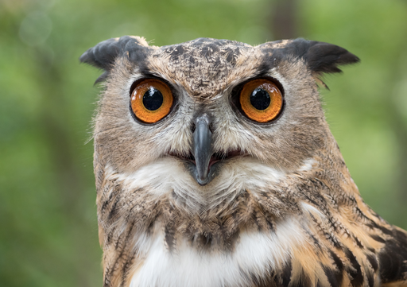

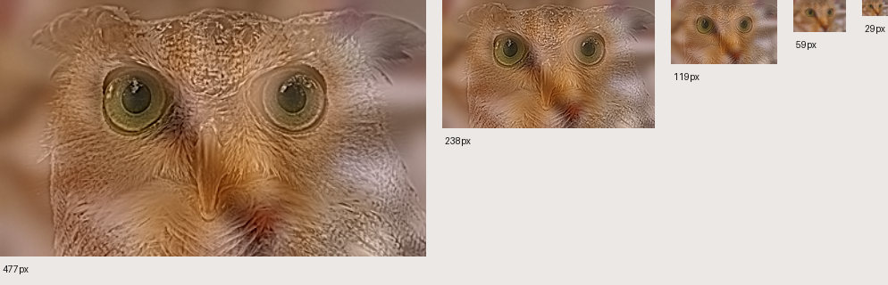
This is my favorite. At a large size, I see the owl beak, eye rims and feathers. At a small size, I see more of the cat nose, warm face and eye shape. The change is clearer than cat/tiger. A faint cat mouth is still visible near the beak.
Aligned crop: 477 × 288 · σ low = 10 px · σ high = 2 px · high-band gain = 1.5. Before display clipping, 0.16% of RGB channel samples lie outside [0, 1].
02 / Full process: Chelsea + Owl
I chose cat and owl because their eyes can be lined up, while their noses and textures look different. The cat provides broad shapes; the owl provides fine detail. I tried gains from 1 to 2 and chose 1.5 to make the owl clearer. I kept σ low = 10 and σ high = 2.
Alignment before filtering

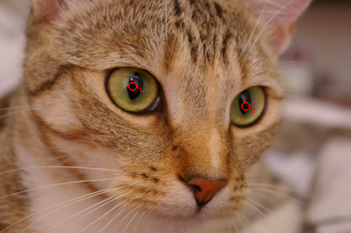

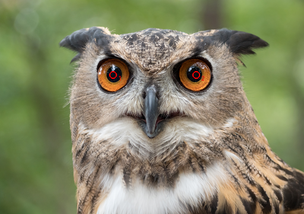


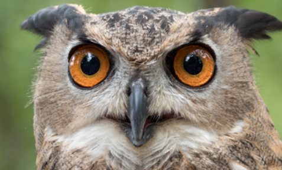

I correct photo orientation and resize each source to width 512 with Lanczos, keeping its shape. I mark two eye centers and use them to find the shift, rotation and uniform scale. I map both images onto a 480 × 560 canvas with bilinear interpolation. I then crop the largest rectangle that contains valid pixels from both sources.
The shared crop is 477 × 288 pixels. The chosen eye coordinates reach their targets with error below 5.68e-14 pixels. This checks the transform calculation, not every facial feature. The cat mouth and owl beak still differ. I follow the two-point alignment idea from the MATLAB starter and implement it in Python.
Low-pass, high-pass, combine
L = GσL * A · H = B − GσH * B
Hybrid = L + gH

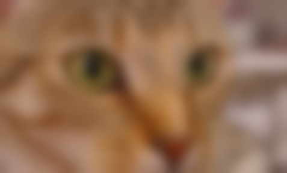

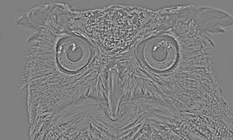
I apply the Gaussian along x and y, separately for each RGB channel. Its radius is ceil(4σ), with reflected borders. The high-pass result is the original minus its blur. The low band keeps broad shapes and colors; the high band keeps edges and texture. Gain g changes only the high band. I keep the raw values, then clip to 0–1 and round to 8-bit only when saving PNGs. All color comparisons use this same display step.
Hybrid implementation
def make_hybrid(low_image, high_image, sigma_low, sigma_high, gain=1., mode='gray'):
low_image, high_image = np.asarray(low_image, dtype=float), np.asarray(high_image, dtype=float)
if low_image.shape != high_image.shape or low_image.ndim != 3 or low_image.shape[2] != 3:
raise ValueError('Aligned images must have equal RGB dimensions.')
if mode not in MODES or not np.isfinite(gain) or gain < 0:
raise ValueError('Invalid color mode or high-frequency gain.')
low_input = low_image if mode in ('low_color', 'both_color') else np.repeat(luminance(low_image)[:, :, None], 3, axis=2)
high_input = high_image if mode in ('high_color', 'both_color') else np.repeat(luminance(high_image)[:, :, None], 3, axis=2)
low = gaussian_blur(low_input, sigma_low)
high = high_input - gaussian_blur(high_input, sigma_high)
return {'low_input': low_input, 'high_input': high_input, 'low': low,
'high': high, 'hybrid': low + gain * high}
03 / Five Fourier views

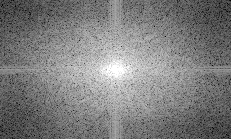

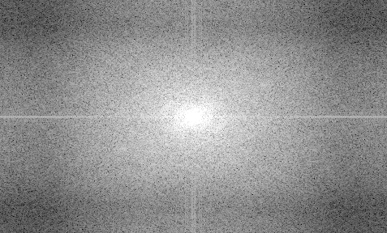

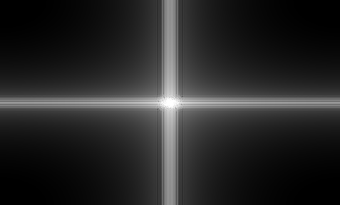

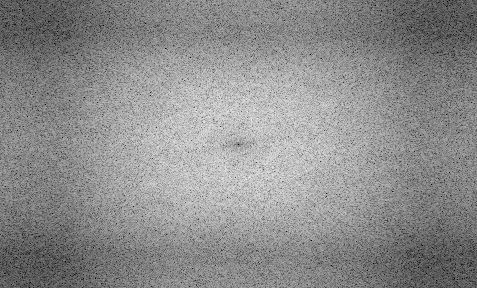

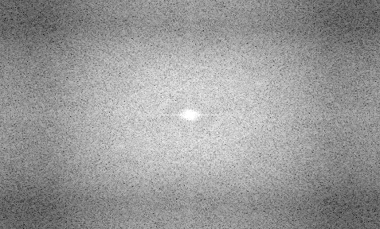
gray = image @ [0.2126, 0.7152, 0.0722]
log_magnitude = np.log(np.maximum(
np.abs(np.fft.fftshift(np.fft.fft2(gray))), 1e-8))The five FFT plots show the two aligned inputs, their filtered parts and the raw hybrid. I use the same grayscale weights for all of them. The high-pass FFT uses the signed detail values, not the gray display picture. The hybrid FFT also uses values before clipping. The small floor value avoids log(0).
The center shows the lowest frequencies, including the average brightness (DC). Frequency increases toward the outside, reaching about ±0.5 cycles/pixel on each axis. All plots use the same log range, [-3.209, 5.614], from the pooled 1st and 99.8th percentiles. Low-pass filtering keeps more near the center. High-pass filtering reduces the center and keeps more outer detail. The hybrid contains both. Cropping and border handling mean the patterns are not perfect circles.
Choosing the cutoffs
For a Gaussian, G(f) = exp(−2π²σ²f²). I use the frequency where its response falls to half: f½ = √(2 ln 2)/(2πσ) cycles/pixel. The high-pass response reaches half at the same frequency. Multiplying by image width gives cycles per image width. These are approximate cutoffs, not sharp boundaries. Larger σ low removes more fine detail from the low band. Larger σ high lets broader shapes enter the high band.
Derek + Nutmeg
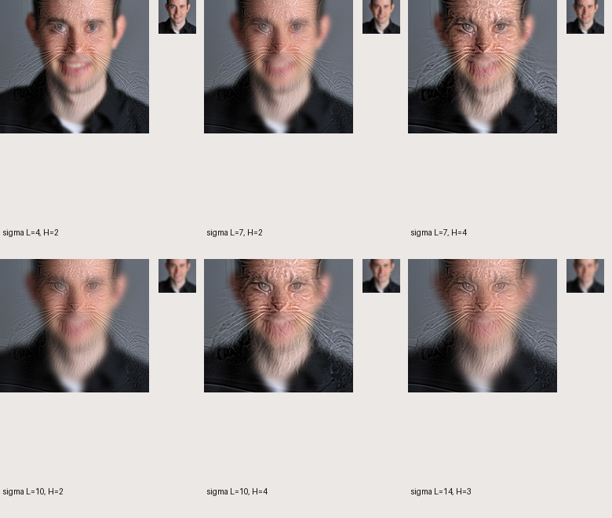
I choose sigma low = 10 and sigma high = 4. This removes fine detail from Derek and keeps enough cat fur and face shape. Sigma high = 2 makes the cat less clear. Gain = 1.2 strengthens the cat detail without changing the low-band average.
Selected approximate half-amplitude cutoffs: low = 8.73, high = 21.83 cycles per aligned image width.
Obama + Trump
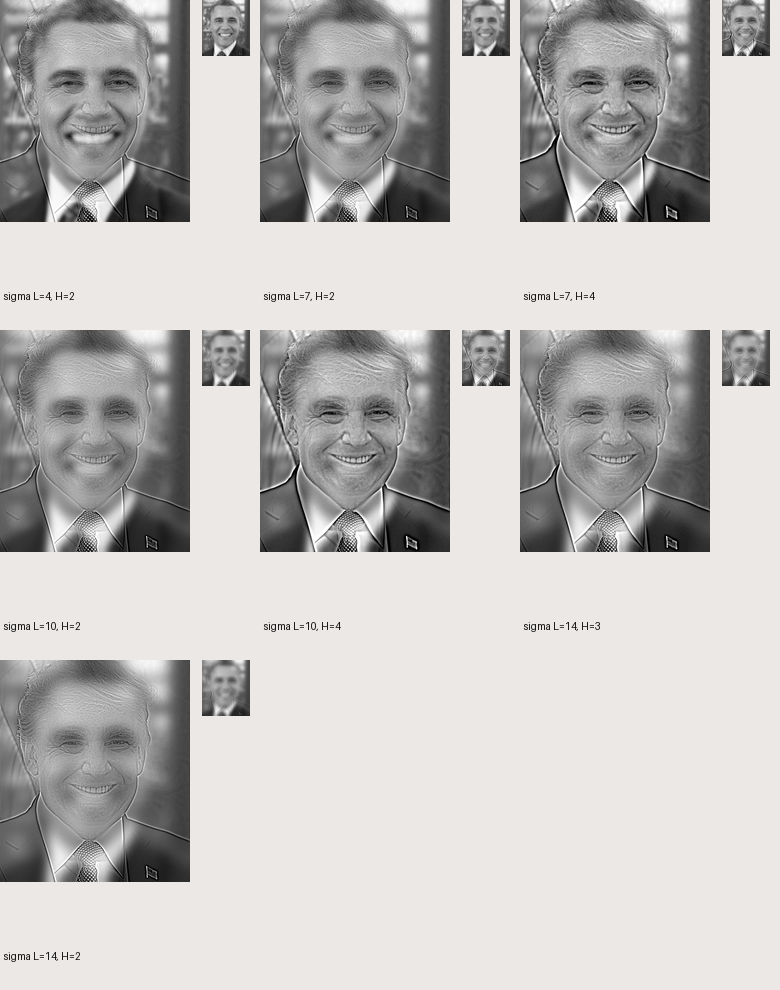
I choose sigma low = 14 to remove more fine detail from Obama. Sigma high = 2 keeps only finer Trump detail than 3 or 4. I then choose gain = 2.4 to make that detail visible. This gives a clearer small-view switch than adding broader Trump shapes.
Selected approximate half-amplitude cutoffs: low = 6.42, high = 44.97 cycles per aligned image width.
Chelsea + Owl
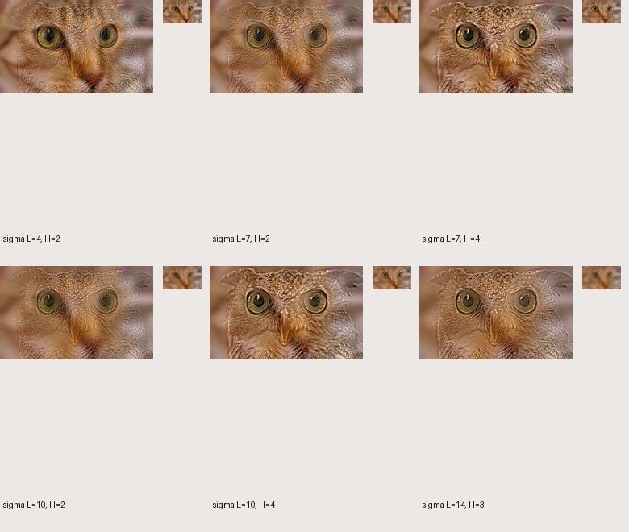
I keep sigma low = 10 and sigma high = 2. This keeps fine owl detail while letting the cat show when small. I try gains 1, 1.25, 1.5, 1.75 and 2, then choose 1.5. It makes the owl clearer than gain 1, while larger gains look too harsh. This adds 50% more high-band strength without changing its cutoff. The cutoff comparison also uses gain 1.5.
Selected approximate half-amplitude cutoffs: low = 8.94, high = 44.69 cycles per aligned image width.
Swapping the favorite pair
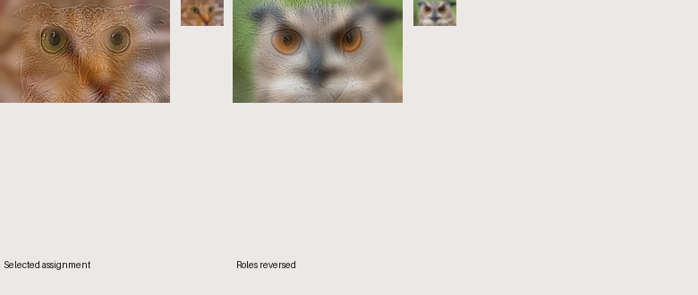
With the owl in the low band, its broad face and beak stay visible when small. The cat detail does not replace it clearly. Keeping cat in the low band and owl in the high band gives the clearer large-owl/small-cat change.
04 / Bells & Whistles: where should color go?
Mandatory extension · Four controlled variants
I try four versions: grayscale, color only in the low band, color only in the high band, and color in both. Alignment, crop, filters and gain stay the same. I make grayscale with fixed RGB weights and copy it into three channels. I use RGB values from 0 to 1 without gamma correction.
Favorite pair, full-size variants


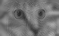


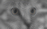

Derek + Nutmeg
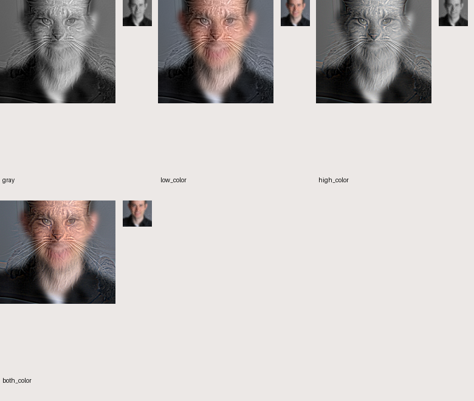
I keep color in the low-frequency Derek image and make the cat detail grayscale. Skin color helps Derek show at small sizes. Color in both adds colored edges but does not fix the shape difference. High-only color is weak because the high-pass filter removes broad color areas.
Obama + Trump
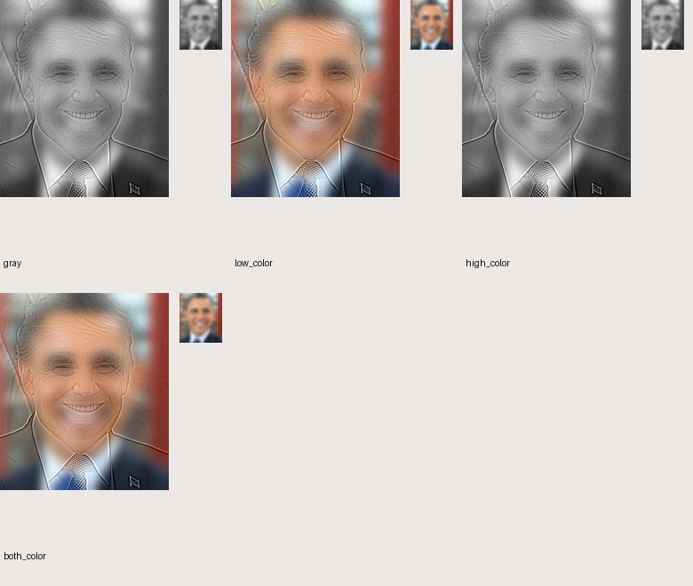
I choose grayscale. Color in the low band makes Obama stay too visible in the large image. High-only color has little effect. Color in both keeps the same broad color bias and adds colored edges. Grayscale makes the change depend more on shape and image size.
Chelsea + Owl
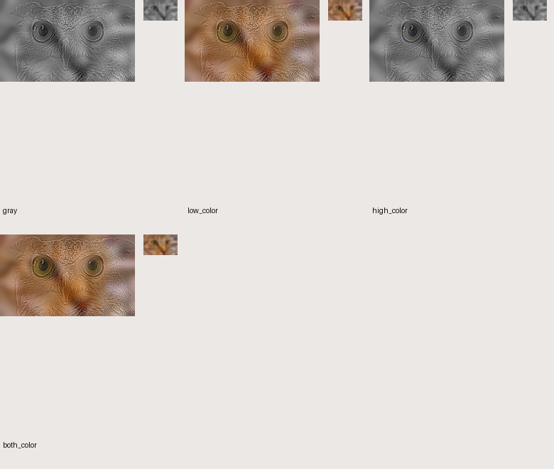
I choose cat color in the low band and grayscale owl detail. The warm color helps the small view look like a cat. Color in both can add colored edges around the eyes and feathers. High-only color loses the broad cat color. All four versions use gain 1.5 and the same alignment and filter sizes.
Color can make one image easier to recognize, but can also make it stay visible at the wrong size. I choose the color setting separately for each pair.
Verification, sources and reproduction
Eight unit tests check alignment, warping, shared cropping, high-pass filtering, reconstruction, grayscale, FFT plots and invalid inputs. The raw files keep aligned images, transforms, filtered parts, color versions, swapped roles and all five FFT results. I also save the parameters, source hashes and clipped fractions.
Derek and Nutmeg are course samples. I chose the other two pairs from openly available photos; I did not take those photos. The downloaded files stay unchanged. I resize, align, crop and filter copies to make the results.
- Derek — Course-provided sample. Course material; no additional open-license claim.
- Nutmeg — Course-provided sample. Course material; no additional open-license claim.
- President Barack Obama, official portrait, 2012 — Pete Souza / The White House. Public domain (U.S. federal government work).
- Donald Trump, official portrait, 2017 — Shealah Craighead / The White House. Public domain (U.S. federal government work).
- Chelsea the cat — Stefan van der Walt. CC0.
- Eurasian eagle-owl (44088) — Rhododendrites. CC BY-SA 4.0.


.jpg){kind=link}
The Chelsea + Owl results use CC BY-SA 4.0, with credit to Rhododendrites and Stefan van der Walt. Source links are above. This license applies to these images, not to unrelated code or other pairs.
Method: Aude Oliva, Antonio Torralba and Philippe G. Schyns, Hybrid images, 2006 (paper). I use Gaussian filters as required by the assignment. I also consider alignment, shape and color when choosing the pairs.
Algorithm source · Experiment source · Unit tests · Landmarks and settings · Measurements · Source and license records
What I learned
I learned that adding the two bands is simple, but making both images recognizable takes more work. Lining up the eyes helps, but does not fix different mouths or face shapes. Filter sizes, gain and color all affect the result. At some middle sizes, both images are still visible. Increasing the owl gain made its detail easier to see, but too much gain looked harsh. I found it useful to check both large and small views before choosing the final settings.
Python 3.14.3 · NumPy 2.4.2 · SciPy 1.17.0 · OpenCV 4.13.0 · Pillow 12.1.0